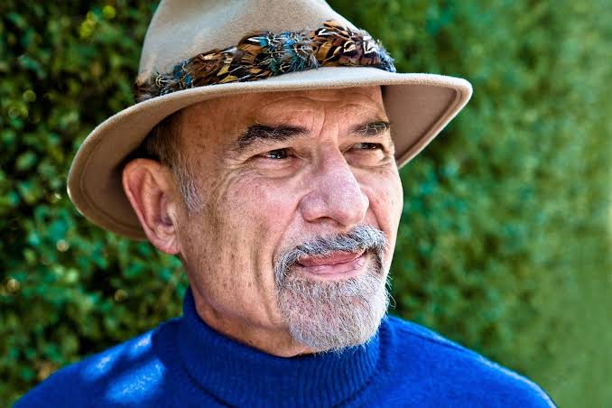

Le monde de la psychothérapie et de la littérature est en deuil. Irvin D. Yalom, écrivain, psychiatre et figure emblématique de la psychothérapie existentielle, est décédé à l’âge de 92 ans des suites d’une crise cardiaque. Né le 13 juin 1931 à Washington D.C. dans une famille juive immigrée, il a grandi dans un milieu modeste où la lecture est rapidement devenue son refuge. Devenu professeur émérite de psychiatrie à l’université Stanford, il a marqué des générations de thérapeutes par son approche humaniste et sa capacité à mêler philosophie et pratique clinique. Tout au long de sa carrière, Yalom a exploré avec profondeur les thèmes de l’existence, de la mort et du sens de la vie. Ses œuvres, tant romanesques qu’essayistes, ont transformé la manière dont nous appréhendons la psychothérapie. Parmi ses livres les plus marquants, Et Nietzsche a pleuré et La méthode Schopenhauer sont devenus des références, combinant avec brio fiction et concepts philosophiques. Dans ses dernières années, il a partagé un témoignage poignant avec son épouse Marilyn dans Une question de mort et de vie, abordant avec une lucidité bouleversante l’expérience du deuil et de la fin de vie. Irvin Yalom laisse derrière lui un héritage immense. Son œuvre continue d’inspirer psychothérapeutes et lecteurs du monde entier, nous rappelant que l’exploration de soi est un voyage sans fin.

Un maître de la psychothérapie existentielle s’éteint
